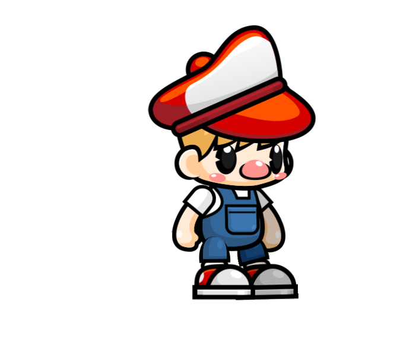
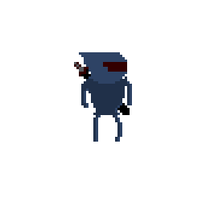

01
Character lineup
Nine real assets on a flat illustrated shelf with names and no rarity, pricing, or trading-card treatment.
Native macOS desktop companion
A working menu bar app with nine real 2D characters that can be chosen, dragged, resized, poked, and left to react while you work.



Product summary
Petty opens as a Mac menu bar accessory and places a transparent, borderless character directly on the desktop. The Character Store lets users switch between nine bundled companions immediately.
Pointer movement and typing trigger active animation, a click triggers a short reaction, dragging responds to speed, and extended idle time moves the character into a resting state.
Trailer storyboard summary
Character showcase concepts
01
Nine real assets on a flat illustrated shelf with names and no rarity, pricing, or trading-card treatment.
02
One large idle pose with three smaller real frames showing the animation system without generating new poses.
03
A current screenshot remains the primary evidence, supported by restrained 2D labels outside the real interface.
Showcase image ideas
Start with a landscape launch image, then derive square and Reddit-focused layouts from the same locked character and screenshot layers.
Character-first lineup with all nine names.
Real desktop screenshot plus a quiet 2D motion field.
One interaction per image: drag, resize, poke, or rest.
Real product proof with concise implementation context.
Recommended toolchain
Full-display capture, cursor polish, and restrained zooms.
Master timeline, captions, sound, and platform versions.
Static layouts using locked real PNG and screenshot layers.
Reliable capture and professional editing without a license.
Social launch ideas
Product proof first. Interaction details second.